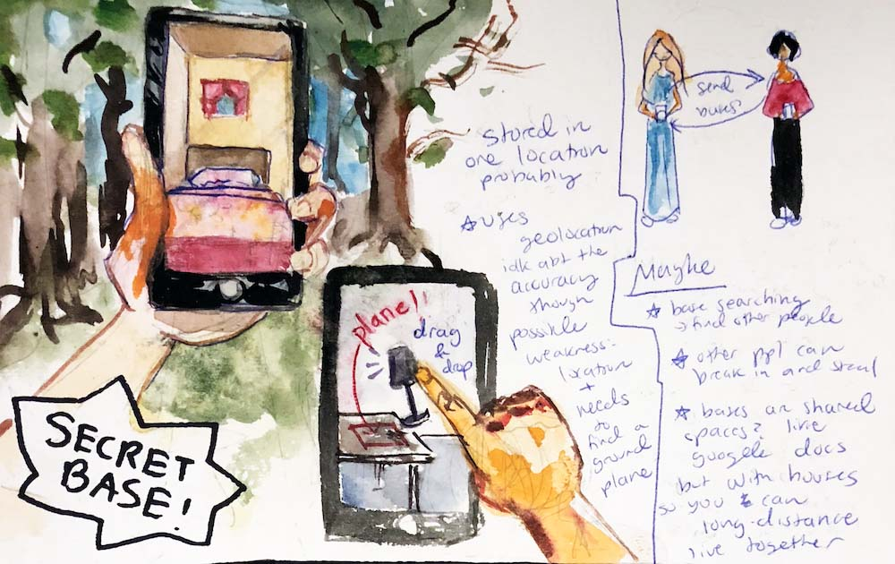
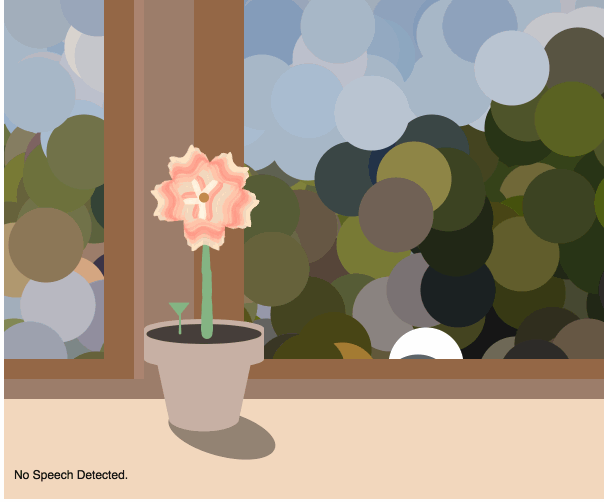

TartanHacks: Oink Accessibility Chrome extension
Spring 2019
A collaboration between Megan Ung, Kearnie Lin and Kimberly Lo
This project won the Google Accessibility Award at TartanHacks. It's a chrome extension that uses computer vision to auto-generate missing alt tags for images, hide sensitive content, etc.
Oink won the Google Accessibility Award at TartanHacks! Oink is a Chrome extension with a suite of web accessibility tools. It uses computer vision to auto-generate missing alt tags for images, hides sensitive content, makes font sizes bigger, and alerts users when sound is playing on a webpage. All of these functionalities are included, but can be toggled on and off based on user needs. For this project, I worked in a team of 4, with Kearnie Lin, Megan Ung and Kimberly Lo. I designed and built the UI; I also set up the socket.io backend that's being used to perform the calls to Google Cloud Vision.


 image of interface
image of interface
Adding in missing alt tags
Alt tags are important components of images on the internet for those who use screenreaders to browse the web. However, websites sometimes don't include alt tags for these images, leaving the screenreader-reliant user unable to know what the content of the image is. We realized that we could use modern computer vision techniques to remedy this; our chrome extension looks for images that are missing alt tags, and sends those images to our backend through socket.io, which then sends the image through Google Cloud's computer vision to be labeled. We then add in these content labels as alt tags. This socket.io backend was being run continuously on my Digital Ocean server. Below is a webpage without our extension. It doesn't have alt tags on its images. With our extension turned on, alt tags have been applied to the image!


Sensitive Content Filter
Using the same techniques as described above, we can determine what the content of an image is. The web can be difficult for those who are especially sensitive to certain content, so we allow the user to give us a list of tags to watch for. We will then hide images that match those tags.

More!
Our app can also increase font size, make links more visible, and alert you if there's sound playing on a page.
Future Goals
 future goals
future goals
At the Hackathon!
 Our team presenting our project!
Our team presenting our project!
Pixel Art TSNE and DCGAN
Fall 2018
I datascraped ~5000 pixel icons from Deviantart and then extracted feature vectors from them, which were used to put them into a grid of nearest neighbors. I also used DCGAN to generate new pixel icons.
Inspiration
With this project, I wanted to computationally analyze and recreate Deviantart art because I had been a very active member of Deviantart in my middle school days and thought that it would be a nice tribute to those days. I choose pixel icons specifically because of their uniform style and nostalgic value (for me, at least). Because a lot of the work was a little computationally heavy, I remotely ran most of my code on a computer hosted in CMU's Studio for Creative Inquiry. I had been reading a good amount of papers about machine learning and wanted to really play around with topics related to what I had been reading about. I created this project during the first third of my independent study class.
Scraping for Images
I used Node.js to grab roughly 5000 images using the Deviantart API, querying for square pixel images with a certain amount of likes that had been marked by their creator as "downloadable."

Feature extraction and Tsne
In a Jupyter Notebook, I used Pytorch's pretrained VGG16 model to extract feature vectors from all of my images. This allowed me to get the "nearest neighbors" of any given pixel icon. Shown below are examples of the nearest neighbor finding. The top/larger image was the origin image and the five images below are its nearest neighbors.


Then, I could use run tsne on these images to plot them by feature vector. I also used
an updated (Python 3) implementation of Raster Fairy to turn the 2D point cloud into a grid. Below is the result on a smaller (2000 images) subset of pixels.

DCGAN
I used an implementation of DCGAN that I found here to generate more. They turned out looking a little like pixel mush, so I tried messing around with the learning rate / number of epochs. The results still weren't as good as I was hoping, but I learned a lot about GANs and machine learning during this whole process and am really happy that I did this project.


HackMIT: ResQ
Fall 2018
Won HackMIT IBM sponsor award. A all-in-one disaster preparedness + relief tool for both individuals and rescue orgs.
About
Made at 2018 HackMIT, won the Best Disaster Preparedness & Relief Solutions for IBM Call for Code Challenge award! An all-in-one disaster preparedness + relief tool. People can access free information about potential and ongoing disasters as well as giving rescue teams and aid organizations to assess needs for each specific event using Google analytics and location data. It has a working implementation of an IBM Watson natural language processing data pipeline that analyses real-time Twitter data to predict disaster damage better that the Federal Emergency Management Agency (FEMA). I made the user registration / login flow, the user dashboard and on the Firebase user information storing and retrieval.
DEVPOST POST HERE
Secret Base AR
Spring 2018
Using distinctive images (posters, stickers, wall patterns) from real life, users can build “secret bases” that will pop up any time the app detects those images. These bases will be stored and can be sent to the users’ friends through a friend code.
About
Using distinctive images (posters, stickers, wall patterns) from real life, users can build “secret bases” that will pop up any time the app detects those images. These bases will be stored and can be sent to the users’ friends through a friend code. These friends also have the ability to see and modify the same structure if they are within proximity of the same image. I created this project to explore the idea of digital intimacy and friendship; I was interested in internet-based relationship dynamics and wanted to prototype a way to share a personal space digitally. All the furniture was textured with hand-painted watercolor textures, and the “sharing” aspect uses both Firebase authorization for user sign in and Firebase’s database to remember base information. The AR was made using vuforia’s cloud database and extended tracking.
 furniture in Unity environment
furniture in Unity environment


The Process
I started with concept artwork. With AR secret bases, the bases are located forever where their "image target" exists and are only accessible to those who have been invited, kind of like a secret treehouse club.  I began by working on integrating Firebase user auth and database into Unity.
I then started building the Unity environment, which I wanted to use my own textures for. I had considered using premade assets, but wanted my final result to have a more distinctive look. I watercolored my textures in my sketchbook, scanned them in, made a bump map using photoshop and then textured the objects.
For the basic grid and block placing implementation, the blocks had to snap to the grid and be able to be stacked upon each other. Furthermore, I wanted to have a square that would indicate where the next block would be placed down if the user would press "place."


I then integrated the block system into the AR part. For each image target I loaded into Vuforia, I gave it a unique id that would later be used to map the image target to them furniture data stored in Firebase.
Then, I worked on getting the firebase details correct. I was able to send and retrieve data, and authorize users, but I didn’t have a structured way of implementing my idea yet.
Overall, this was a hard and time-consuming project for me, but I learned a lot about Unity, AR and Firebase in the process.
Although it could be cleaned up a lot, I was really happy with how it turned out and was happily surprised by how functional it was.
Thank you to: Nitesh for helping me document, Rain for being the best 15-251 partner, Sophia C. for being a Very Good Buddy, Golan Levin for providing wonderful advice, and Claire for her advice on the watercolor textures!
Weekly deliverables
Spring 2018
For the first half of Golan Levin's Spring 2018 Interactivity and Computation course, we produced weekly deliverables.
Aesemic Writing (maze writing)
For this assignment, I imagined an alien civilization that spoke in riddles and wrote in mazes. I created a "maze language" where each letter is mapped to a maze fragment and put together. The resulting "maze" is then carved using the union find algorithm so that it will be a real maze. My resulting mazes were drawn onto paper using the Axidraw plotter.


Speech (Word sentiment flower)
Using a speech sentiment library and p5.speech, I analyze the sentiment of the user's speech and the flower will grow or wilt according to the sentiment. For example, bad dirt" will cause it to wilt while "happy flower" will cause it to grow. I also used rita.js to give extra impact for rhymes. The flower is drawn using p5.js! 
Motion Capture Metaballs
I hooked up mocap data to a three.js metaball demo to create mocap metaball figures!


Animated Loop
An animated loop made in Processing.

Caffeine Bot
Caffeine bot tracks how long you have until you need to recaffinate!

Bot-a-razzi
Fall 2017
Final concept studio project; worked in a team of 4. Floating robots follow the user around in this VR experience built for the Google Cardboard using Aframe.js. The robot "view" info is sent to a different screen that projects a fake instagram profile with the video stream. I worked on the projections, sending and retrieving the data using Firebase. I also 3d modeled some of the models included and built the fake social media pages and their fake chat streams.
 above: concept art by me for bot-a-razzi.
above: concept art by me for bot-a-razzi.
 above: baby room (there are three rooms) in bot-a-razzi.
above: baby room (there are three rooms) in bot-a-razzi.